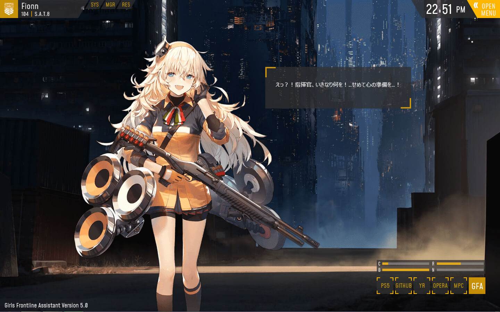

Yusatsu Nao's Blog
Thursday, March 28, 2019
Girls Frontline Assistant Rainmeter Released
Posted by Yusatsu Nao
Hello again guys, welcome to my site. Okay today, I released a new rainmeter skin, Girls Frontline Assistant. This rainmeter is for you who play Girls Frontline, if you like your T-Doll in your desktop you can use this rainmeter now. As of this version ( Version 5.0 ), This skin have lot of features, there is PC status like CPU, RAM, Battery, Network and Drive Space. Clock, Interactive T-Dolls ( with dialogue and voiced ), favourite application shortcut, dynamic screen size, changeable color theme and the T-Dolls. Now, there is only 24 T-Dolls available, I don't know if I will add more or not, I will update it later. The screenshot is below.
For the download link is inside blockquote below, click it and the link will redirect you to works page, after you in Works Page, click #5 to download it and for manual how to use is already there.
DOWNLOAD
Copyright © 2019 Yusatsu Nao, Copyright © SUNBORN Network Technology Co., Ltd. All Rights Reserved.
All images are copyright to their respective owners.
I hope you enjoy this skins. I will create another skin again later and other stuff too. So, follow this site and follow my social meadi, you can check it on About Page.